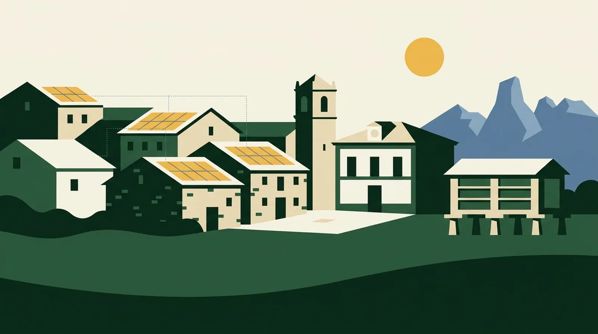

Acompañamiento
La Fundación Asturiana de la Energía (FAEN), a través de su Oficina de Transformación Comunitaria, ayuda a constituir la comunidad energética y a dar los primeros pasos técnicos y jurídicos.
CERA · Previabilidad energética rural
Un primer número honesto en un minuto, con siete datos. Para comunidades energéticas, cooperativas y explotaciones agrarias de Asturias.
Porcentajes sobre tu consumo anual; los excedentes son producción extra que se vierte a red.
La producción estimada supera tu consumo anual: los excedentes vertidos a red son mayores que la energía que autoconsumes.
Resultado orientativo y educativo, calculado con reglas simplificadas y valores medios. No sustituye a una ingeniería, a un estudio de acceso y conexión, a un instalador ni a una asesoría legal. Antes de decidir, encarga una validación profesional.
Cómo funciona
Cálculo transparente y sin ningún dato personal. Cada punto del recorrido explica una fase del proceso.

Recurso solar
Producción fotovoltaica estimada por zona, con datos de PVGIS (Comisión Europea). Selecciona tu concejo en el mapa para consultar su recurso y su producción estimada. El recurso es elevado y homogéneo: toda la región supera los 1.100 kWh por cada kWp instalado y año.
Siguiente paso
CERA da el primer número. A partir de ahí, un proyecto energético rural no se levanta en solitario: existen acompañamiento, financiación y un marco legal que hoy juega a favor. Estos apoyos valen igual para una empresa o explotación, un grupo de vecinos, una cooperativa o un ayuntamiento.
La Fundación Asturiana de la Energía (FAEN), a través de su Oficina de Transformación Comunitaria, ayuda a constituir la comunidad energética y a dar los primeros pasos técnicos y jurídicos.
El Principado convoca cada año subvenciones a renovables y eficiencia (edición 2026 abierta a particulares, autónomos, explotaciones, entidades sin ánimo de lucro y ayuntamientos), sumadas a los programas estatales de autoconsumo colectivo con fondos del PRTR.
El RD-ley 7/2026 amplía el autoconsumo colectivo hasta 5 km y crea la figura del gestor de autoconsumo; el RD 916/2025 reconoce la agrivoltaica como superficie admisible para las ayudas de la PAC: placas y actividad agraria, compatibles.
Referencias orientativas a programas y normativa vigentes en 2026; confirma condiciones y plazos con cada organismo antes de decidir. CERA no gestiona ayudas ni tramita proyectos.